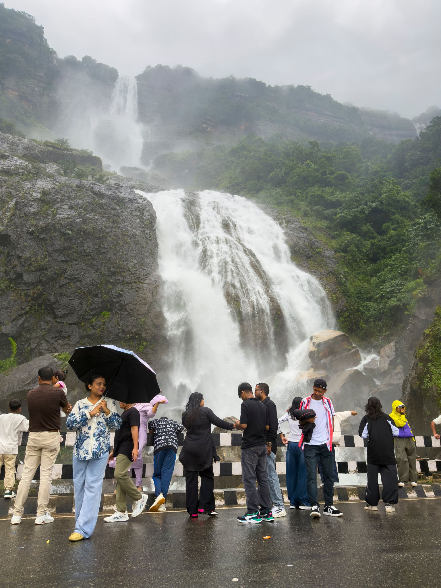
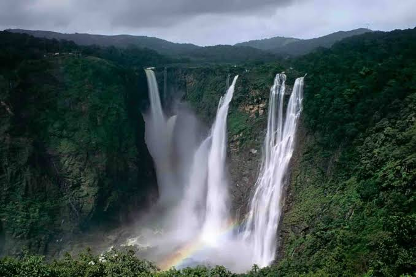
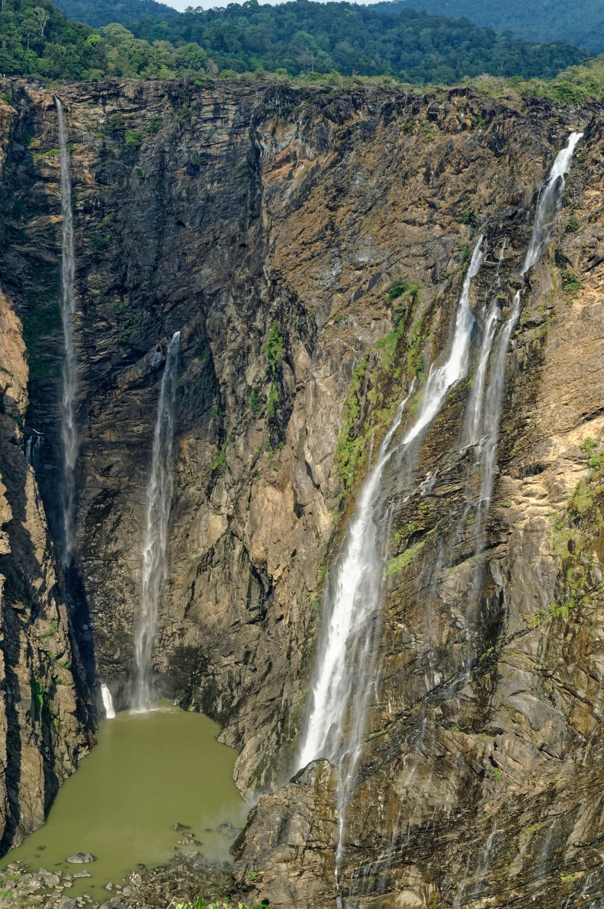
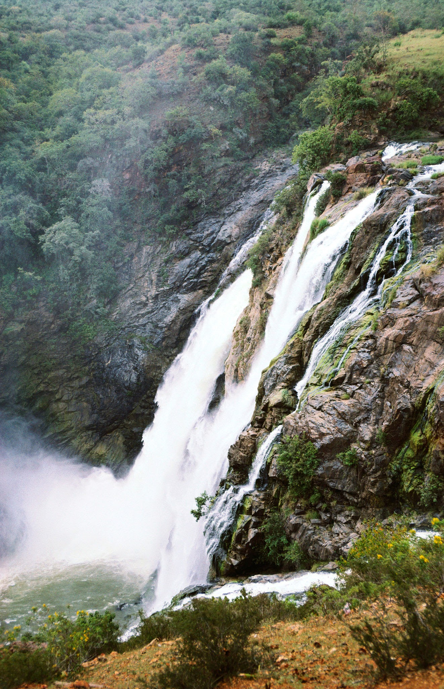
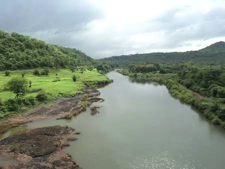

01
Agumbe
A rainforest landscape famous for its rich biodiversity, dramatic sunsets and monsoon atmosphere.
WESTERN GHATSWhere the Varahi River descends through the rainforest-covered Western Ghats, creating one of India's most spectacular waterfall landscapes.
*Height figures vary by source and by how the multi-tiered waterfall is measured.
Kunchikal's impressive vertical descent is best understood as a waterfall system rather than a single straight plunge.
Move the comparison slider to understand the approximate vertical scale of the waterfall.
Kunchikal belongs to the Varahi River system, linking rainfall, streams, forested slopes and downstream reservoirs in the Western Ghats.
Heavy seasonal rainfall feeds streams across the Ghats.
Water moves through the rugged rainforest catchment.
The Varahi system gathers and channels the mountain water.
Water drops through the multi-tiered waterfall system.
Rainfall intensity, catchment conditions and seasonal runoff strongly influence the appearance and volume of the waterfall. The landscape therefore changes dramatically between the wet and dry seasons.
The Western Ghats respond strongly to the monsoon. Compare how water volume and landscape character change through the year.

MONSOONSouthwest monsoon rainfall transforms the Western Ghats into a saturated green landscape. Water flow is generally at its strongest during and around the monsoon period.

Kunchikal is not an isolated waterfall. Its character comes from the surrounding Western Ghats — steep terrain, dense vegetation, streams and heavy seasonal rainfall.
The Ghats form one of India's most important mountain ecosystems. Their western slopes receive substantial monsoon rainfall, creating numerous rivers, cascades and forest streams.
The surrounding valleys reveal how flowing water, geological structure and seasonal rainfall interact across the mountain landscape.

Explore the approximate location of Kunchikal Falls and its position within Karnataka's Western Ghats.
The surrounding Western Ghats offer forests, viewpoints, mountain roads and other natural attractions.
A rainforest landscape famous for its rich biodiversity, dramatic sunsets and monsoon atmosphere.
WESTERN GHATSAnother spectacular waterfall landscape within the rainforest-rich Western Ghats of Karnataka.
WATERFALLA prominent hill landscape offering broad views across the surrounding Western Ghats.
HILLSExplore the biodiversity and forest ecosystems surrounding Karnataka's mountain landscapes.
BIODIVERSITYWater, forest, valley and mountain landscapes define the visual character of Kunchikal.


Published height figures for Kunchikal Falls can differ depending on whether the total multi-tier descent or a particular visible section is measured. Verify the final figure against the project's approved geographic source before publication.